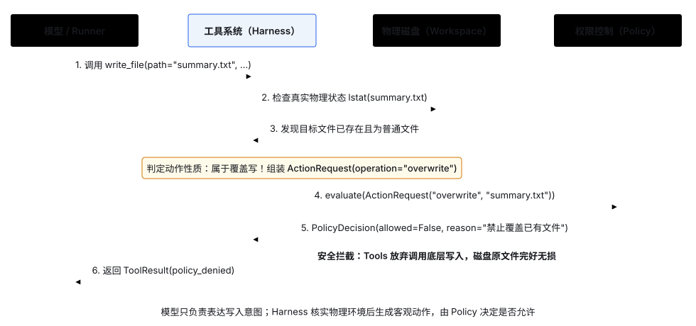
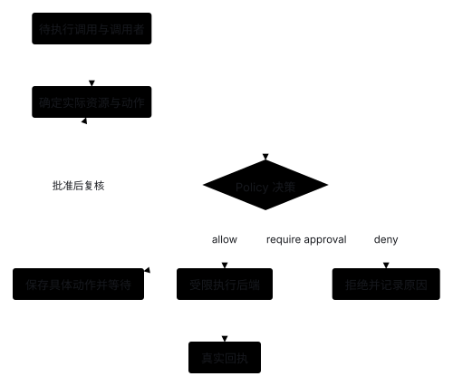

Policy：在执行前检查操作权限
1. 问题起点：为什么执行工具前必须做权限检查？
一旦给 Agent 开放写文件、删文件或调用外部接口的工具，模型就可能因误解指令或受外部资料诱导而发起危险操作。考虑以下场景：
- 用户：“把资料整理成摘要保存下来，不要动原来的资料文件。”
- 模型：调用
write_file(path="notes.txt", content="...")，试图直接覆盖原有资料。 - （系统拦截：在真正写入磁盘前，Policy 检查发现该操作属于“覆盖已有文件”，直接拒绝执行）
这就是 Policy（权限策略） 模块的核心职责：在工具真正产生副作用之前，根据安全规则（Rules）对本次动作作出许可决定（Decision）。无论后续如何替换具体实现，Policy 都必须保证四条底线：
- 按真实动作而非字面工具名判断：必须识别出本次调用究竟是“新建文件（
create）”还是“覆盖已有文件（overwrite）”，以及具体操作哪个目标路径。 - 权限规则来源可信：只依据应用配置或经用户明确确认的授权作判断；模型生成的文字或读取到的外部文档内容绝不能自行授予权限。
- 拒绝决定必须阻断执行：一旦返回拒绝，底层工具函数绝对不能运行，且默认遵循“未明确允许即为拒绝”。
- 实际执行严格符合所获许可：获准“新建”后，若写入瞬间目标文件已存在，绝不能自动降级为“覆盖”。
2. 黑盒交互：输入动作请求，输出许可决定
以拦截覆盖文件为例，工具系统与 Policy 之间的黑盒交互只交换两项数据：
- 输入（
ActionRequest）：本次要执行的具体动作与目标资源，例如ActionRequest(operation="overwrite", resource="summary.txt")。 - 输出（
PolicyDecision）：是否允许执行及原因说明，例如PolicyDecision(allowed=False, reason="禁止覆盖已有文件")。

3. 可选实现方案：如何识别动作、如何判断规则？
实现 Policy 时，“如何从工具调用中提取动作”和“如何根据规则判断许可”是两个可以独立组合的设计维度：
维度一：如何从调用中识别动作？
- 注册时声明权限元数据：工具注册时声明所需权限类别（如
read/write）和路径参数名，由共享代码结合文件系统状态自动生成ActionRequest。适合多个工具复用同类权限的场景。 - 工具提供自定义动作描述函数：由每个工具各自编写函数解析参数并描述动作。适合各工具资源形态差异极大的场景，但维护成本更高。
维度二：如何判断规则？
- 代码条件分支：在内存中通过配置开关与白名单集合直接判断。规则简单直观，适合起步阶段。
- 声明式规则配置：将允许／拒绝条件写成配置文件按优先级匹配。适合规则频繁变动的场景，需处理规则冲突与默认兜底。
- 独立策略服务：由外部服务集中审批并返回决定。适合多应用共享企业级权限，但会引入网络调用与服务高可用成本。
4. 本项目当前选择与未实现范围
- 本项目当前选择：采用 注册时声明权限 + 共享函数识别动作 + 注册表统一拦截 + 内存条件分支判断（源码 walkthrough 与实验命令见阶段 2）。CLI 默认允许工作区内读取与新建文件，禁止覆盖已有文件。
- 尚未实现（按需扩展）：声明式规则引擎、人工在线审批、短期受限授权凭据（Capability Token）以及操作系统级沙箱隔离。
5. 期望达到的效果
- 合法操作正常执行：在工作目录内读取文件或新建不存在的文件时，Policy 返回允许并完成操作。
- 违规覆盖零副作用拦截：尝试覆盖已有文件时，Policy 返回
policy_denied，底层写入函数不执行，原文件内容保持不变（见阶段 2 禁止覆盖实验）。 - 并发竞态不降级：获准新建文件后，若写入前目标文件已被其他进程抢先创建，底层独占创建立即报错，绝不演变为覆盖写入。
按需了解：审批、受限授权与执行隔离（当前未实现）
6. 人工审批
需要人作决定时，可以暂停并展示具体动作、目标和参数。审批后执行前仍须确认动作未变、授权仍有效。它适合需要人工判断的操作，代价是等待状态、身份校验和恢复流程。

7. 执行隔离
Policy 判断是否批准动作；沙箱限制执行代码实际能访问什么。它们是不同职责。子进程本身不保证文件或网络隔离，操作系统限制、容器或虚拟机也需要按授权范围配置，不能替代业务权限判断。
8. 受限授权凭据
也可以由可信程序签发仅允许特定主体、动作、目标和有效期的凭据。它适合短期委托，代价是撤销、过期、并发使用和重试管理；不是给工具加一个“已批准”参数就能实现。
9. 不可信资料与进一步阅读
资料可能诱导模型提出越权动作。提示模型忽略恶意指令有帮助，但权限仍须由程序执行检查，不能让资料自行修改规则。更多源码与设计资料见方案依据；等待与恢复涉及的状态问题见 Session / State。